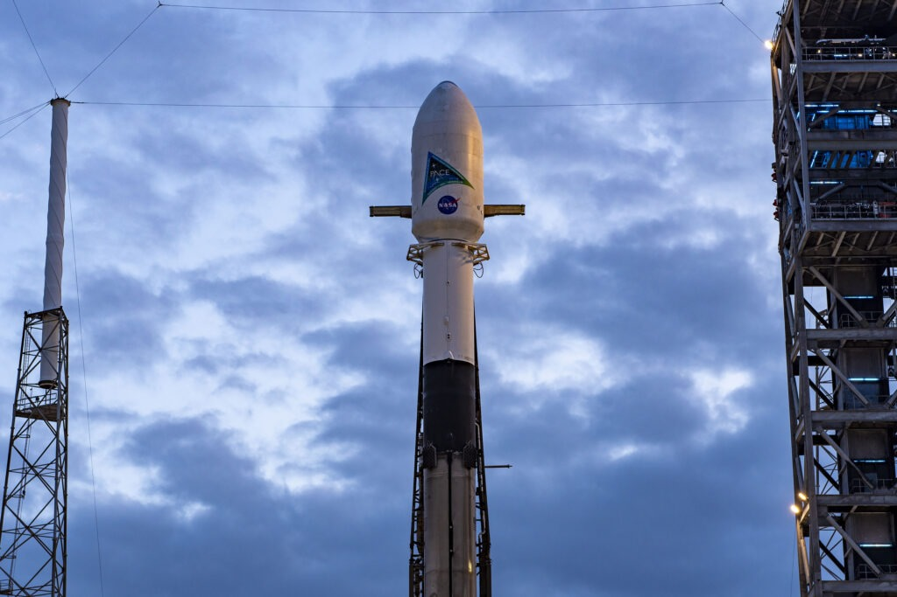

9. Advantages and Limitations of PACE
While we've delved into the technical details of PACE and its data-gathering prowess in previous modules, there's an even more fascinating aspect to explore: the profound benefits it brings to our understanding of Earth's oceans.
9.1 Oceanographic Benefits
- Precise Phytoplankton Measurements: PACE's Ocean Color Instrument (OCI) provides high-resolution data on phytoplankton distribution and abundance, crucial for understanding marine food chains and ecosystem health.
- Harmful Algal Bloom Detection: PACE can identify and track harmful algal blooms, which can harm marine ecosystems and human health.
- Carbon Cycle Insights: By studying phytoplankton and ocean-atmosphere interactions, PACE helps us understand the global carbon cycle and its role in climate regulation.
9.11 Atmospheric Advantages
- Aerosol Characterization: PACE's polarimeters measure the properties of atmospheric aerosols, such as dust, sea salt, and smoke, which impacts air quality, climate, and weather patterns on a large scale.
- Cloud Properties: PACE provides essential data about cloud type, height, and thickness, which are crucial for understanding Earth's energy balance and precipitation patterns.
9.12 Climate Advantages
- Climate Change Research: PACE's data helps scientists study the impacts of climate change on ocean ecosystems, sea level rise, atmospheric circulation, and much more.
- Climate Model Validation: PACE observations can be used to validate and improve climate models, enhancing our ability to predict future climate scenarios.
9.2 Environmental Benefits
- Environmental Monitoring: The data collected by PACE can be used to monitor ocean pollution, coastal erosion, and other such environmental issues.
- Resource Management: PACE information can support sustainable fisheries management, coastal development, and marine conservation efforts.
9.3 Limitations of PACE:

- Variability in Data Quality: The quality of ocean-color data from satellites is not uniform across time or location. It depends on factors like sensor performance, atmospheric conditions, water constituents, and other environmental influences such as plankton blooms or Sun glint, which can distort the data.
- Uncertainty in Measurements: Every physical measurement, including ocean-color remote sensing, has uncertainty. Without estimating this uncertainty, the data's reliability is questionable. Understanding these uncertainties helps users decide if the data is suitable for their application.
- Importance of Uncertainty Estimates: Uncertainty estimates are crucial for analyzing time series, validating trends, and supporting models like climate predictions. Knowing the uncertainty provides a fuller picture of possible outcomes, including extreme scenarios.
- Limitations of Current Validation Methods: Ocean-color products have typically been validated by comparing them to field data, which has limitations. Field measurements also have uncertainties and are collected on different spatial and temporal scales than satellite data, making exact comparisons challenging.
- Limitations of Current Validation Methods: Ocean-color products have typically been validated by comparing them to field data, which has limitations. Field measurements also have uncertainties and are collected on different spatial and temporal scales than satellite data, making exact comparisons challenging.
- Need for New Approaches: Current methods of comparing ocean-color data to field measurements are insufficient, especially for larger areas. There is a need for better approaches to assess uncertainties across different spatial and temporal scales.
- Recommendations for Improvement: The report calls for developing better methods to quantify and communicate uncertainty in ocean-color data, providing users with clearer information to improve data interpretation and use.
9.4 Summary:
Pace and the Environment...
The carbon cycle involves every ecosystem on Earth, including life in the ocean. Phytoplankton play a key role in converting atmospheric carbon into other forms, which can be consumed by other organisms, exported to the deep ocean, or returned to the atmosphere. The diversity of phytoplankton – and the myriad pathways by which they can transport carbon – makes understanding this group of organisms crucial for understanding climate processes. In this way we can have a better track of the carbon cycle using PACE.
PACE will provide a combination of atmospheric and oceanic observations to benefit society in the areas of water resources, disaster impacts, ecological forecasting, human health, and air quality. Users at local, state, federal and international agencies as well as the general public will be able to apply data from PACE to make more informed and robust decisions about their activities. For example, PACE will offer an opportunity to better monitor fisheries, identify harmful algal blooms, and observe changes in marine resources.
Learning about PACE isn't just about science; it's about shaping our future. From understanding climate change to protecting marine life, the insights PACE provides empower us to make informed decisions and take meaningful action. It's knowledge that not only enriches our minds but also equips us to safeguard our planet for generations to come.